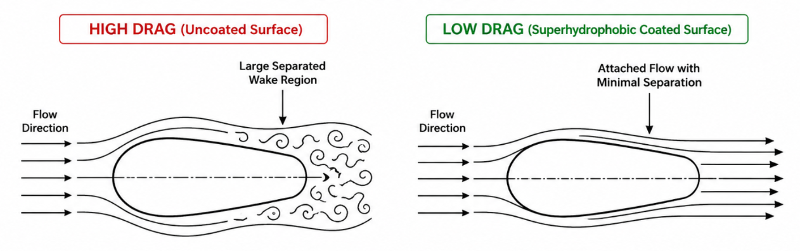

Drag Reduction of Underwater Vehicles using a Robust Superhydrophobic Coating
Project Type: Academic Project (IIT Guwahati)
Status: Ongoing
Project Overview
This academic project focuses on developing a mechanically robust epoxy-based superhydrophobic coating for underwater applications. Superhydrophobic surfaces exhibit a water contact angle greater than 150° and a sliding angle below 10°, resulting from low surface energy and hierarchical micro-nano surface roughness. The proposed coating combines silicon carbide (SiC) particles, carbon nanotubes (CNTs), epoxy resin and PDMS to improve hydrophobicity, mechanical durability, corrosion resistance and underwater drag reduction.
Research Motivation
Conventional superhydrophobic coatings provide excellent water repellency but their micro-nano structures are often fragile and susceptible to mechanical wear and external loads. Damage to these structures can increase surface wettability and reduce their long-term performance.
This project addresses this limitation by incorporating mechanically strong SiC and CNT structures into an epoxy-based coating while using PDMS to maintain low surface energy and hydrophobicity.
Objectives
- Develop a mechanically robust and chemically stable superhydrophobic coating for underwater applications.
- Develop a hierarchical micro-nano surface structure using SiC particles and carbon nanotubes.
- Improve coating strength and substrate adhesion using epoxy resin.
- Enhance hydrophobicity using PDMS and hydrophobic silica.
- Investigate corrosion resistance, mechanical durability and underwater drag reduction.
Proposed Coating Design
The proposed coating uses SiC particles and CNTs to form a mechanically strong micro-scale reinforcement network. Epoxy resin provides structural strength and adhesion to the substrate, while PDMS contributes low surface energy and enhanced hydrophobicity. The combined micro-nano structure is designed to protect the hydrophobic surface from mechanical damage while maintaining water repellency.

Methodology
The coating preparation begins with surface modification of SiC particles using KH-550, followed by the incorporation of CNTs to form a hybrid reinforcement network. Stearic acid is introduced to reduce surface energy and improve hydrophobic characteristics.
An epoxy-based base layer is then applied to the substrate. The composite coating is prepared by combining modified SiC/CNT particles, hydrophobic silica, epoxy and PDMS. The mixture is ultrasonically dispersed to obtain a uniform coating solution, sprayed onto the base layer and thermally cured to form the final coating.
Material System
- Silicon Carbide (SiC) particles
- Carbon Nanotubes (CNTs)
- Epoxy resin
- PDMS
- Hydrophobic silica
- Stearic acid
Characterization & Testing
To evaluate surface morphology and chemical robustness, several characterization tests are performed:
- FT-IR: Analysis of chemical structure and functional groups.
- XPS: Verification of surface chemical modification.
- Contact Angle: Evaluation of surface hydrophobicity and water repellency.
- Sliding Angle: Evaluation of water droplet mobility on the coated surface.
- SEM: Observation of micro-nano surface morphology.
- Mechanical Stability Test: Evaluation of resistance to friction and wear.
- Chemical Stability Test: Evaluation under acidic, basic, UV and saline conditions.
- Corrosion Resistance Test: Electrochemical evaluation of corrosion protection.

Mathematical Model
The Basset-Boussinesq-Oseen (BBO) equation is used as the primary physics-based model to describe the motion of a sphere falling through water. The model considers gravitational, buoyancy, drag and added-mass forces.
The drag coefficient and Reynolds number are used to characterize the hydrodynamic behaviour and evaluate the effect of the superhydrophobic coating on fluid resistance.
Drag Reduction Analysis
Drag reduction is evaluated by comparing the hydrodynamic behaviour of an uncoated reference surface with the superhydrophobic coated surface. The drag reduction efficiency is determined from the difference in drag experienced by the two surfaces.
Key Performance Parameters
- Water Contact Angle
- Sliding Angle
- Surface Morphology
- Mechanical Wear Resistance
- Chemical Stability
- Corrosion Resistance
- Drag Coefficient
- Drag Reduction Efficiency
- Reynolds Number
Expected Engineering Benefits
- Improved water repellency through hierarchical micro-nano surface structures.
- Enhanced mechanical durability of the coating.
- Improved corrosion protection for underwater surfaces.
- Reduced solid-liquid interaction through air-layer formation.
- Potential reduction in underwater hydrodynamic drag.
Applications
- Underwater vehicles
- Marine structures
- Underwater components
- Corrosion-resistant surfaces
- Drag-reducing fluid-flow surfaces
Skills Developed
- Surface Engineering
- Composite Coating Development
- Superhydrophobic Surface Design
- Fluid Mechanics
- Mathematical Modelling
- Experimental Characterization
- Scientific Literature Review
Future Scope
Future work can focus on optimizing coating composition, improving long-term mechanical durability, evaluating performance under different flow conditions and validating drag reduction under realistic underwater operating environments.
← Back to Academic Projects